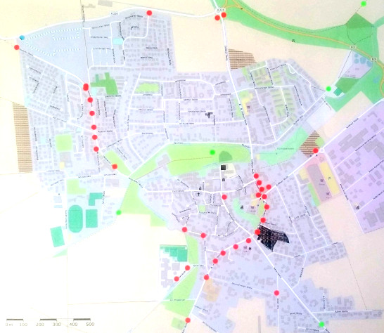

Für Details bitte auf Markierungen klicken
Karte ändern (Nur für Experten)
| Erfassungsdatum | Beschreibung | Status |
|---|---|---|
| 02.05.2016 | Zeigenbocksbrücke - schlammig bei Nässe | Bauamt ist unterrichtet |
| 20.04.2016 | Real - Loser Split auf Radweg - Sturzgefahr | Bauamt ist unterrichtet |
| 20.04.2016 | Drücker B3 - Weetzener Landstr - Drücker schwer erreichbar | Umbau mit Erweiterung der Stadtbahn gepant - bis 2020? |
| 05.05.2016 | Kreisverkehr K226 - Göttinger Str. - Beim Ausfahren aus dem Kreisverkehr sollte der Autofahrer Vorrang gewähren, aber durch das Verkehrszeichen “Vorfahrt Achten” für den Radfahrer wird dieses wieder aufgehoben - unterschiedlichen Vorrangregelungen führte im vorliegenden Fall zur Konfliktsituation. | noch offen |
Am verkaufsoffenen Sonntag, den 10. April 2016 am Rewe-Center, hatte der ADFC einen Infostand aufgebaut. Die Besucher konnten mithilfe von Klebepunkten positive und auch kritische Radwegeführungen in Pattensen markieren. 
2016-05-07-11h23